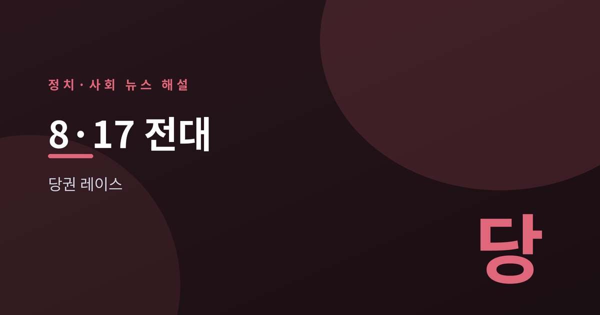
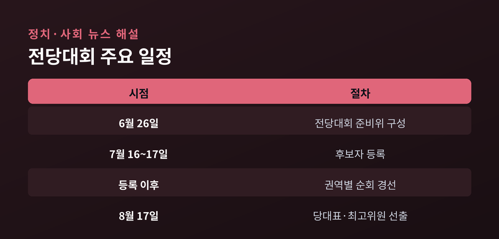
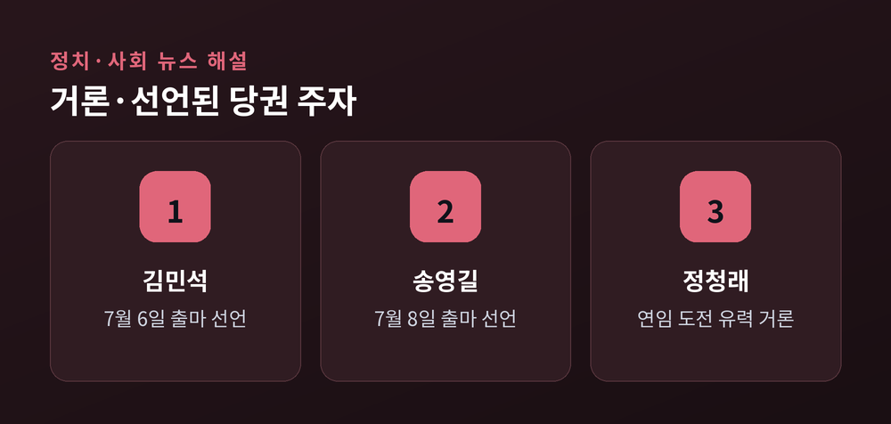
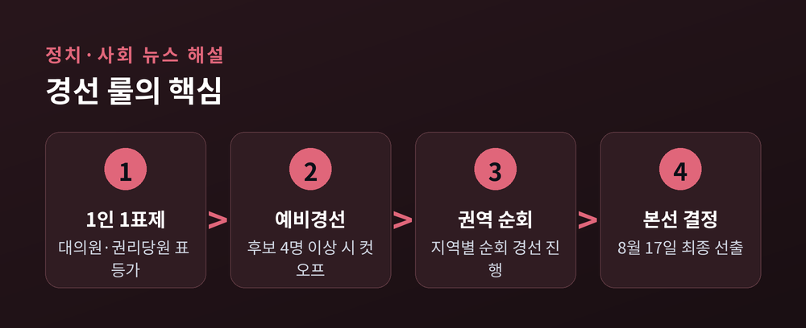
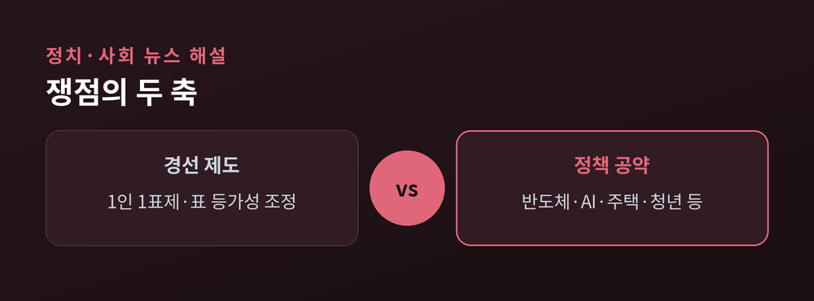

당권 레이스의 쟁점

더불어민주당이 8월 17일 전국당원대회(전당대회)를 열어 새 당대표와 지도부를 선출한다. 6월 26일 전당대회 준비위원회 구성으로 선거 체제에 들어갔고, 후보자 등록은 7월 16~17일에 진행된다. 등록 이후 권역별 순회 경선을 거쳐 8월 17일 당대표와 최고위원을 뽑는 일정이다. 후보가 4명 이상이면 예비경선(컷오프)을 먼저 치른 뒤 본경선으로 넘어간다. 이번에 선출되는 지도부는 2028년으로 예정된 다음 총선 국면까지 당을 이끌게 된다는 점에서 관심을 모은다. 요컨대 이번 전당대회는 단순한 지도부 교체가 아니라, 앞으로 몇 년간 집권여당의 노선과 진용을 정하는 출발점으로 볼 수 있다. 이 글에서는 무슨 일이 벌어지고 있는지, 왜 지금 중요한지, 어떤 쟁점이 걸려 있는지, 앞으로 무엇을 지켜봐야 하는지를 사실 위주로 정리한다.

당권 도전은 사실상 세 인사의 경쟁 구도로 좁혀지는 모습이다. 7월 6일 김민석 전 국무총리가 광주와 서울에서 잇따라 출마를 공식 선언했고, 7월 8일 송영길 의원이 여의도 당사에서 출사표를 던졌다. 앞서 대표직에서 물러난 정청래 전 대표의 연임 도전도 유력하게 거론된다(MBC·뉴스핌 등 보도). 각 후보는 저마다 '이재명 정부와의 협력', '총선 승리'를 앞세우며 차별화를 시도하고 있으며, 출마 지역과 슬로건에서도 각자의 강조점이 드러난다. 다만 아직 등록 전 단계인 만큼, 추가로 출마를 선언하거나 반대로 접는 인사가 나올 가능성도 남아 있다. 후보군과 최종 등록 여부는 7월 17일 등록 마감을 거쳐 확정되며, 이 시점이 지나야 실제 경쟁 구도가 확정된다.

이번 전당대회는 집권여당의 당권을 정하는 선거라는 점에서 무게가 다르다. 당대표는 국정 운영의 한 축인 여당을 지휘하며 정부·국회와의 조율에서 중심 역할을 맡는다. 여기에 다음 총선까지 당을 이끄는 지휘자 역할이 걸려 있어, 공천·조직·노선 전반에 영향을 미친다. 야당의 당권 경쟁이 정권 견제 전략을 두고 벌어진다면, 집권여당의 당권 경쟁은 정부의 국정 과제를 어떻게 뒷받침하고 조율할지를 두고 벌어진다는 점에서 성격이 다르다. 이 때문에 후보들은 '당과 정부의 관계를 어떻게 설정할 것인가', '집권여당으로서 성과를 어떻게 낼 것인가'를 핵심 메시지로 내세우고 있다. 동시에 다음 총선을 겨냥한 조직·전략 정비도 이번 지도부의 과제로 함께 거론된다.

제도 측면의 최대 변화는 '1인 1표제' 도입이다. 민주당은 대의원과 권리당원이 던지는 표의 가치를 동일하게 적용하기로 했다. 표의 등가성 조정은 지지 기반이 다른 후보들에게 상이한 영향을 줄 수 있어 경선 셈법의 변수로 꼽힌다.
정책 공약도 쟁점이다. 예컨대 송영길 의원은 반도체 전담기구 신설, 정부의 'AI 고속도로' 사업에 대한 입법·예산 뒷받침, 서울 주택공급 문제 해결, 청년 해외진출을 위한 '장보고 10만 프로젝트', 취임 즉시 지명직 최고위원 2명을 2030 청년으로 임명하는 방안 등을 제시했다(뉴스핌 등). 김민석 전 총리는 '유능하고 강한 민주당 복원'을 내세웠다(한국일보·파이낸셜뉴스 등). 정청래 전 대표는 연임을 통한 안정적 당 운영을 앞세울 것으로 거론된다. 이처럼 후보마다 산업·주택·청년·조직 등 강조하는 지점이 갈린다. 각 후보의 공약과 대(對)정부 관계 설정은 등록 이후 토론회 등을 통해 더 구체화될 전망이며, 유권 당원들이 어떤 우선순위에 반응하는지가 경선의 또 다른 변수가 될 수 있다.

앞으로의 관전 포인트는 크게 세 갈래다. 첫째, 7월 16~17일 등록에서 후보가 몇 명으로 확정되는지, 4명 이상이 되어 예비경선이 열리는지다. 둘째, 권역별 순회 경선에서 지역별 표심이 어떻게 갈리는지다. 셋째, '1인 1표제'가 실제 결과에 어떤 영향을 미치는지다. 한편 제1야당인 국민의힘은 지난 지도부 체제로 운영되고 있어, 여야 모두의 정국 대응이 함께 주목된다. 최종 결과는 8월 17일 전당대회에서 가려진다. 특정 후보의 우세를 단정하기 어려운 만큼, 유권 당원들의 선택과 경선 과정 자체가 관전의 핵심이 될 전망이다.